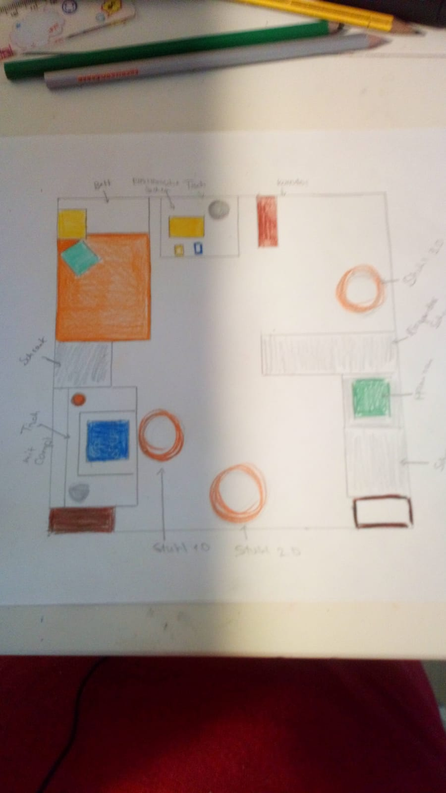

The ocean is the connected body of salty water that covers 70.8% of the Earth's surface. The sea moderates the Earth's climate and has important roles in the water cycle, carbon cycle, and nitrogen cycle. Although the sea has been travelled and explored since prehistory, the modern scientific study of the sea—oceanography—dates broadly to the British Challenger expedition of the 1870s. The sea is conventionally divided into four or five large sections, such as the Pacific, called oceans while smaller sections, such as the Mediterranean, are known as seas.
